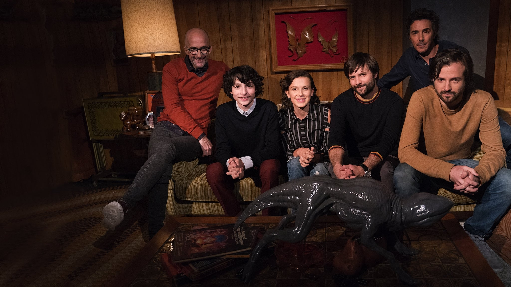

Sonic, o ouriço azul mais veloz do mundo, vive isolado e sem amigos na Terra desde que precisou fugir de seu planeta natal. Todavia, ele recebe a ajuda de um policial quando o Dr. Ivo Robotinik, a mando do governo dos Estados Unidos, começa a persegui-lo.


